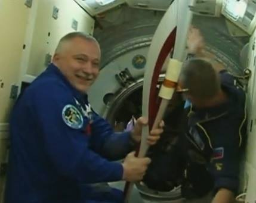

Check out the Prairie Astronomy Club. The club meets at Hyde Observatory on the last Tuesday of every month at 7:30pm. For more information visit the PAC website.
Sunday, 10 November 2013 20:15
Written by Mark Dahmke
The Olympic torch (and a crew of 3) made it to the space station this morning. The torch will take its first spacewalk in history this Saturday.
Read More at CBSNWednesday, 06 November 2013 14:06
Written by Mark Dahmke
A penumbral eclipse is more subtle, and more difficult to observe, than a total or partial eclipse. It happens when the moon moves through the outer part of Earth’s shadow.
By: Bob King | January 21, 2015 | Comments 0
Complete guide to Friday night's triple shadow transit of Jupiter's moons and a remarkable "pre-game" show of mutual events. Cross your fingers and hope that Friday January 23rd will be clear. That night observers from western Europe to the Americas will witness a rare triple shadow transit of three of Jupiter's moons – See more at: skyandtelescope.com
Share on FacebookBy: Bob King | January 14, 2015 | Comments 2
Will you brave the cold Friday morning to witness the conjunction of Saturn and the waning Moon|
See more at: skyandtelescope.com Share on Facebook
Jan. 12 Big Sky
Jan. 30 The Lunar Watch
Feb. 14 Star Cross Lovers
Astronomy, Stars, Cosmos, Lunar, Moon, Telescopes, Universe, Earth, Planets